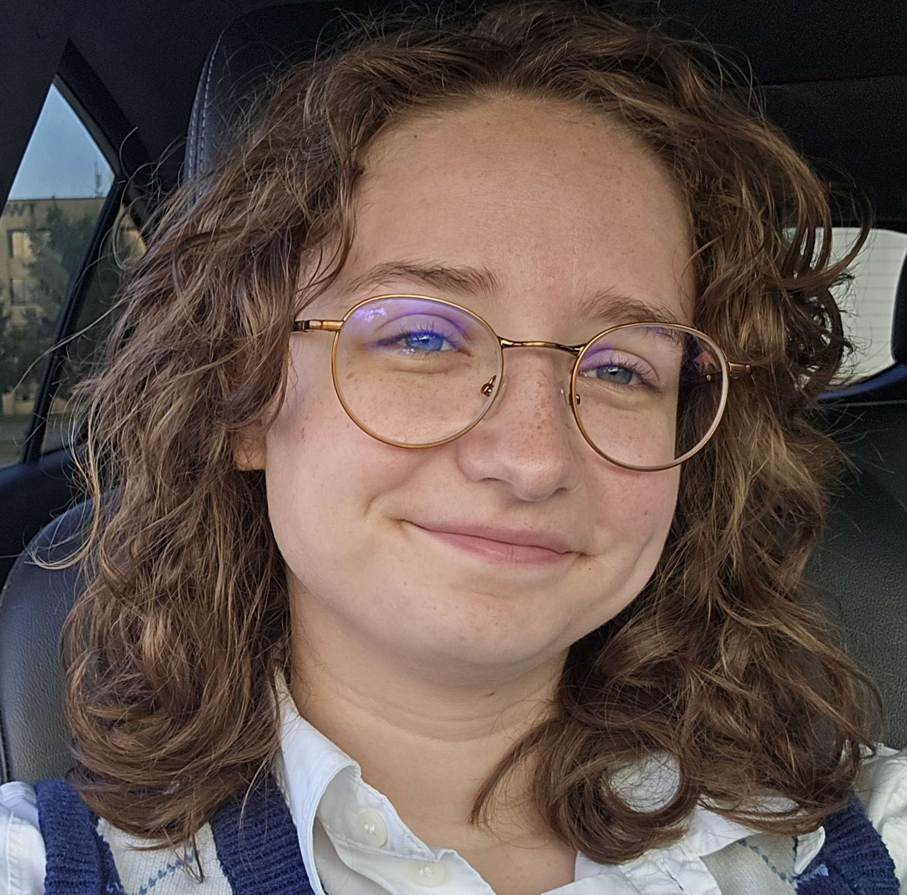

About Me
My research focuses on leveraging machine learning to enhance social understanding and foster meaningful connections. I am particularly drawn to projects that use data to support self-reflection, identity exploration, and interpersonal understanding, whether through interactive AI systems or experimental prototypes.
For my year-long Independent Study (Wooster's undergraduate thesis), I plan to apply unsupervised machine learning to large-scale text data to discover patterns in cognitive style and personality. The goal is to identify clusters that reveal how people process and communicate information, then explore how those patterns relate to learning needs. The work aims to inform the design of adaptive educational systems and accessibility tools that can adjust to diverse cognitive profiles. This project will be published by the end of my undergraduate experience, and I will be presenting it at Wooster's I.S. Symposium.
Outside the classroom, I contribute as a STEM Success Initiative Intern, STEM Zone Intern, teaching assistant, and student leader in organizations including Women's Club Rugby and the Google Developer Student Club. I am passionate about creating technology spaces that are intuitive, expressive, and centered on the human experience.
I plan to pursue a PhD with a program that would allow me to continue and expand my current research on cognitive styles and/or explore my other research interests in neurodivergence experience and online miscommunication minimization.
“I want to build systems that help people recognize themselves more clearly — not flatten them into categories, but give them something to hold onto in the fog.”
Thanks for stopping by. Feel free to explore my projects or reach out.